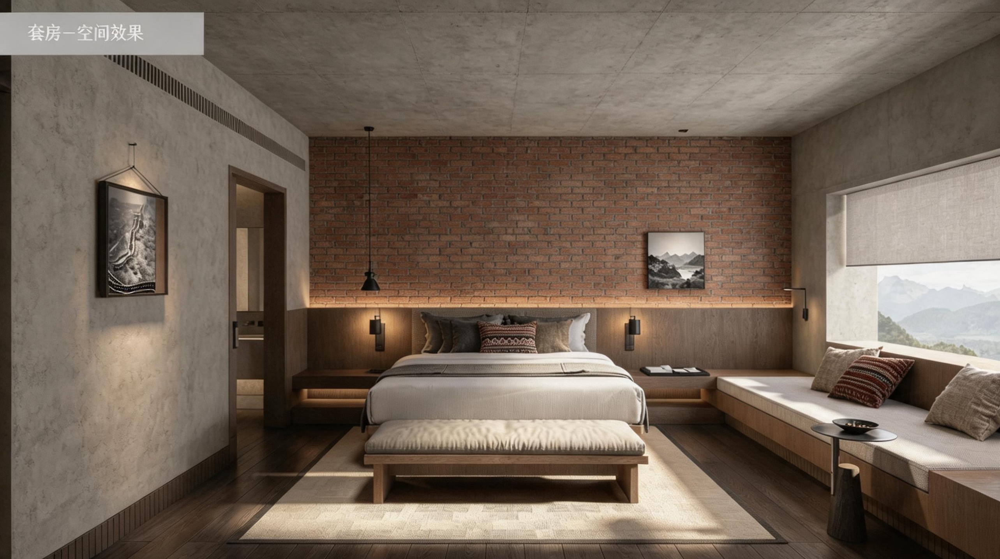

01
商业空间设计
怀化铝厂酒店改造
毕业设计 · 工业遗址改造
怀化铝厂工业遗址改造为精品酒店方案。保留原有钢结构与砖墙肌理，以现代设计语言重构空间叙事。





苗韵展馆
民族文化展馆 · 商业空间
苗族文化主题展馆室内设计。将传统纹样、色彩体系与空间结构进行现代表达，以当代设计语言转译民族文化符号。
书山广场改造
城市公共空间 · 文化广场
以"书山有路"为概念的城市广场改造，将阅读文化与公共空间融合，打造市民文化休闲新地标。
咖啡厅设计
商业餐饮空间
以当代简约美学打造精品咖啡空间，通过材质对比与光影设计营造舒适而有格调的社交场所。
学校大门改造
教育建筑 · 入口空间
以现代简洁的设计语言重塑校园入口形象，兼顾标志性与功能性，打造开放包容的校园第一印象。
户外亲子公园
亲子游乐 · 自然探索
以儿童友好为核心设计理念，融合自然教育与游乐体验，打造安全、趣味、有教育意义的亲子户外空间。
景观公园
城市公园 · 生态景观
以生态优先为原则，平衡功能需求与美学表达，创造人与自然和谐共生的城市绿洲。